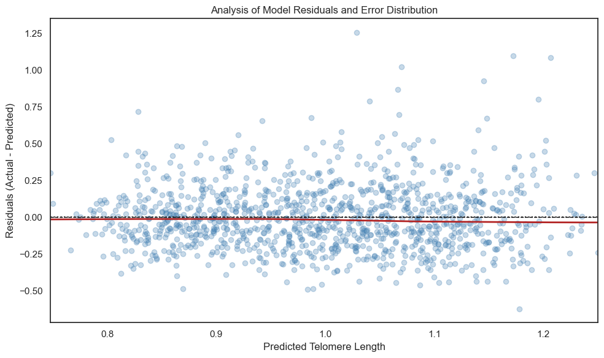

Modeling
Biological Aging
Executive Summary
This project establishes a supervised learning framework to identify the primary clinical and socioeconomic drivers of mean leukocyte telomere length (TELOMEAN) using the multi-year NHANES (1999–2002) dataset. Rather than optimizing blindly for predictive scores, this study focuses on model integrity, rigorous data cleaning, and variance-bias diagnostics to isolate the environmental and social "weathering" components of biological aging.
Data Engineering & Targeted Preprocessing
Real-world epidemiological data contains structural traps. The initial dataset of 134,515 records was optimized down to an analytic sample of 5,407 complete observations using a disciplined, domain-specific ETL pipeline:
- Sentinel Value Auditing: Replaced non-biological survey artifacts and invalid placeholder responses (e.g., survey codes 7, 9, 888) with
NaNon a feature-specific basis to eliminate artificial variance. - Leakage Prevention: Implemented a Scikit-Learn
ColumnTransformerinside an isolated cross-validation loop. Continuous variables were standardized viaStandardScaler, and categorical features were processed viaOneHotEncoder(handle_unknown='ignore')exclusively within training folds. - Impact: Cleaning removed non-biological noise, increasing the baseline Elastic Net R² from 0.1884 to 0.1930 and dropping the Root Mean Squared Error (RMSE).
Multi-Architecture Modeling Strategy
To evaluate variance-bias trade-offs, three distinct model architectures were optimized using GridSearchCV paired with a strict 5-fold cross-validation protocol (k = 5, shuffled with a fixed seed).
[ Cleaned NHANES Dataset (N = 5,407) ]
│
[ 5-Fold Cross-Validation Split ]
┌────────────────────┼────────────────────┐
▼ ▼ ▼
[ Elastic Net ] [ Linear SVR ] [ Random Forest ]
(Sparse L1 Regular) (Margin-Based SVR) (Nonparametric Ensemble)
└────────────────────┼────────────────────┘
▼
[ Diagnostic Audit Matrix ]
Evaluated via R² & RMSE
Cross-Validation & GridSearch Optimization Results
| Model Architecture | CV Mean R² | CV Mean RMSE | Optimal Hyperparameters |
|---|---|---|---|
| Elastic Net | 0.1930 | 0.2323 | alpha: 0.001, L1_ratio: 1.0 (Pure Lasso) |
| Linear SVR | 0.1841 | 0.2336 | C: 0.1, epsilon: 0.1 |
| Random Forest | 0.1646 | 0.2364 | max_depth: 10, n_estimators: 500 |
Architectural Takeaway: The convergence of the Elastic Net to a pure Lasso solution (L₁ ratio = 1.0) indicates that a fully sparse solution is optimal for navigating the intense multicollinearity in the feature space (e.g., the r = 0.88 correlation loop between BMI, waist circumference, and weight). The lower comparative performance of the Random Forest suggests that additive linear relationships dominate the signal over complex non-linear interactions within this cohort.
Model Diagnostics & Explanatory Power
1. Residual Behavior & Specification Validation
Diagnostic analysis of the Elastic Net residuals demonstrates robust model specification:
- Errors are distributed symmetrically around zero across the entire prediction range.

- The absence of curvature or funnel-shaped dispersion verifies that heteroskedasticity is minimized, proving the model is stable even when predicting extreme telomere lengths.
Figure I: Lasso coefficient shrinkage path illustrating the survival of SDoH features over clinical markers as regularization penalty increases.
2. Feature Hierarchy: Social Determinants vs. Clinical Labs
Rather than relying on default model coefficients, feature importance was evaluated using Permutation Importance (10 repeated shuffles per feature), revealing a compelling structural narrative:
- Chronological Age (
RIDAGEYR): The dominant biological signal (Permutation Importance = 0.3036), acting as the primary baseline benchmark. - The SDoH Premium: Social Determinants of Health (SDoH)—including Race/Ethnicity (
RIDRETH1: 0.0181) and Marital Status (DMDMARTL: 0.0046)—consistently outranked traditional clinical biomarkers. - The Lasso Elimination: Traditional risk factors like Total Cholesterol (
LBXTC: 0.0000) and Blood Sugar (LBXGH: 0.0000) were driven to absolute zero importance by the optimal pure Lasso penalty, proving their predictive redundancy when evaluated alongside long-term socioeconomic exposure variables.
3. Quantifying the "Genomic Gap"
While an R² of 19.3% is modest for standard corporate KPI tracking, it represents a highly robust signal in non-genetic epidemiological modeling. The remaining residual variance visually encapsulates the well-documented "Genomic Gap"—the estimated 60–70% of telomere length variance driven strictly by hereditary factors not captured in survey data. This model successfully captures and simplifies the remaining ~20% environment / physiological variance boundary.

Figure II: Actual vs. Predicted Telomere Length. The residual ”spread” visually quantifies the missing genomic variance not captured by clinical or social data.